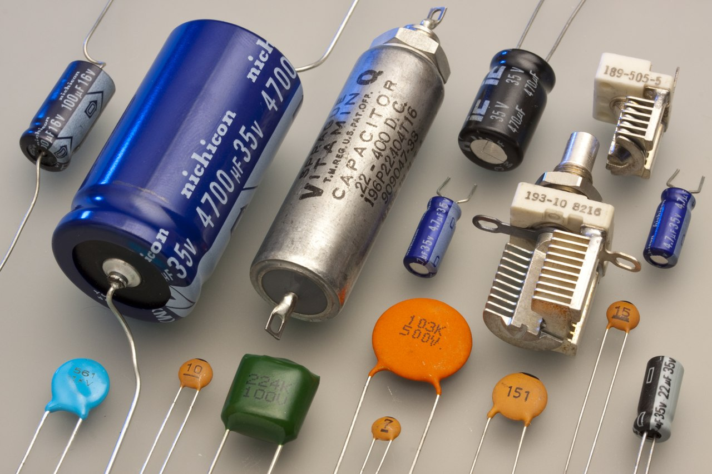

Les condensateurs sont principalement utilisés pour :
Stabiliser une alimentation électrique
(il se décharge lors des chutes de tension et
se charge lors des pics de tension)
Traiter des signaux périodiques (filtrage, etc.)
Séparer le courant alternatif du courant continu,
ce dernier étant bloqué par le condensateur
Stocker de l'énergie, auquel cas on parle de supercondensateur

De nombreuses techniques, souvent issues de la chimie,
ont permis d'améliorer sensiblement les performances des condensateurs.
En savoir plus